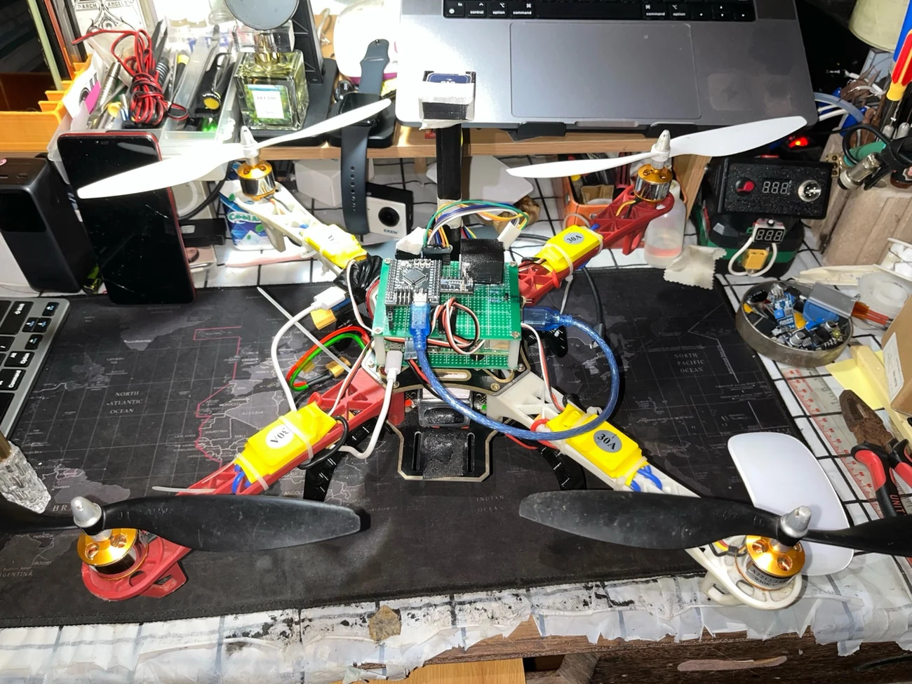

Hệ thống nhúng
C/C++, STM32, ESP32, STM32CubeIDE, ESP-IDF; giao tiếp SPI, I²C, UART, cảm biến và gỡ lỗi firmware.
Xin chào, tôi là
Sinh viên Kỹ thuật Điện tử – Viễn thông
Tôi yêu thích hệ thống nhúng, lập trình firmware và thiết kế phần cứng. Qua các dự án với STM32, ESP32, IoT và UAV, tôi tích lũy kinh nghiệm từ thiết kế, lập trình đến kiểm thử trên thiết bị thực tế.
Hiện tôi muốn tìm kiếm cơ hội thực tập trong lĩnh vực Embedded / Firmware / IoT, nơi tôi có thể học hỏi từ đội ngũ kỹ sư và đóng góp vào các sản phẩm thực tế.
Các công nghệ và kỹ năng tôi sử dụng trong quá trình học tập và phát triển dự án. Những hạng mục đang nghiên cứu được mô tả rõ để người xem hiểu đúng mức độ kinh nghiệm.
C/C++, STM32, ESP32, STM32CubeIDE, ESP-IDF; giao tiếp SPI, I²C, UART, cảm biến và gỡ lỗi firmware.
Thiết kế nguyên lý và PCB với KiCad, lắp ráp và kiểm thử mạch điện, các khối nguồn và kết nối phần cứng.
LoRa, Wi-Fi, MQTT, REST API, HTML/CSS/JavaScript, Git/GitHub; xây dựng ứng dụng IoT kết nối thiết bị.
Tích hợp IMU và điều khiển bay UAV; đang mở rộng sang Raspberry Pi 5, xử lý ảnh và hạ cánh thông minh.
Dự án kỹ thuật quy mô lớn nhất trong portfolio: từ firmware thời gian thực và kiểm thử bay đến AI nhận diện bãi đáp. Các kết quả đều đi kèm mức độ kiểm chứng.
Tự phát triển firmware điều khiển UAV từ STM32F103 đến STM32F405. Hệ thống hiện có vòng điều khiển 400 Hz, Stabilize, AltHold, thu thập GPS/la bàn và logging. Các chức năng Position Hold, thị giác và hạ cánh tự động được phát triển theo từng mức kiểm chứng.
test_096: Position Hold vẫn SHD=1 / ACT=0. Tỷ lệ heading trust cao nhưng có đoạn gián đoạn; Web GCS vẫn mô phỏng, LoRa/autoland chưa điều khiển UAV thật.

Mỗi dự án có một trang riêng để bạn xem tổng quan. Tôi sẽ tiếp tục bổ sung ảnh, sơ đồ, mã nguồn và kết quả kiểm thử cho từng dự án.
Hệ thống cảnh báo lũ sớm qua LoRa, với mạch PCB tự thiết kế và định hướng đồng bộ dữ liệu lên Cloud.
Hệ thống điều khiển chiếu sáng với ESP32-C3, ESP-IDF, MQTT; điều khiển qua Web, điện thoại và trợ lý giọng nói.
Hệ thống phát âm thanh sử dụng ESP32-C3 và giao tiếp SPI, kết hợp lập trình với thiết kế phần cứng tùy chỉnh.
Thiết kế, lắp ráp và thử nghiệm bộ khuếch đại analog 15W OTL với transistor BJT rời, kết hợp thiết kế PCB.
Ứng dụng Console quản lý cửa hàng viết bằng C++ hướng đối tượng, hỗ trợ quản lý hàng tồn kho và đơn hàng.
Tôi mong muốn tìm hiểu thêm về các cơ hội Embedded/Firmware/IoT và sẵn sàng trao đổi về dự án, kỹ năng cũng như quá trình học tập của mình.